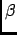

SFA takes into consideration three structural parameters: the orientational distance, the helix radius of screw motion, and the
straightness. The orientational distance, , refers to the relative orientation of two subsequent peptide planes. The radius of
screw motion, , is related to the distances between the C-atoms, in the reference and target peptide planes, and the local
axis of screwmotion. The radius is a measure of the local curling of the backbone conformation. In a flat backbone conformation,
like an extended -strand, is close to zero ; when the local backbone conformation is curled, as in the case of
 -helices and -turns, increases. The maximum observed values usually do not exceed 0.3. Straightness,
-helices and -turns, increases. The maximum observed values usually do not exceed 0.3. Straightness,  ,
is the scalar product between the unit vectors of the axis of screwmotion, relative to four consecutive peptide planes, it
gives information about local curvatures or kinks of a protein backbone tract. For each pair of consecutive peptide planes
represented by their atoms C, O, N, ScrewFit defines these three parameters indicating their relative orientation and distance
from a common axis of rotation (the axis of screw motion)
,
is the scalar product between the unit vectors of the axis of screwmotion, relative to four consecutive peptide planes, it
gives information about local curvatures or kinks of a protein backbone tract. For each pair of consecutive peptide planes
represented by their atoms C, O, N, ScrewFit defines these three parameters indicating their relative orientation and distance
from a common axis of rotation (the axis of screw motion)
Given the definition of SFA your system must contain at least one protein to perform this analysis.
For more detailed and technical information about this analysis please refers to the original paper [38].